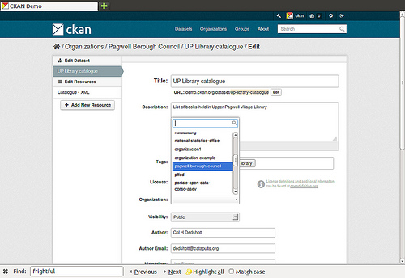

Sysadmin guide¶
This guide covers the administration features of CKAN 2.0, such as managing users and datasets. These features are available via the web user interface to a user with sysadmin rights. The guide assumes familiarity with the User guide.
Certain administration tasks are not available through the web UI but need access to the server where CKAN is installed. These include the range of configuration options using the site’s “config” file, documented in Configuration Options, and those available via Command Line Interface.
Warning
A sysadmin user can access and edit any organizations, view and change user details, and permanently delete datasets. You should carefully consider who has access to a sysadmin account on your CKAN system.
Creating a sysadmin account¶
Normally, a sysadmin account is created as part of the process of setting up CKAN. If one does not already exist, you will need to create a sysadmin user, or give sysadmin rights to an existing user. To do this requires access to the server; see Creating a sysadmin user for details. If another organization is hosting CKAN, you will need to ask them to create a sysadmin user.
Adding more sysadmin accounts is done in the same way. It cannot be done via the web UI.
Customizing look and feel¶
Some simple customizations to customize the ‘look and feel’ of your CKAN site are available via the UI, at http://<my-ckan-url>/ckan-admin/config/.
Here you can edit the following:
- Site title
- This title is used in the HTML <title> of pages served by CKAN (which may be displayed on your browser’s title bar). For example if your site title is “CKAN Demo”, the home page is called “Welcome - CKAN Demo”. The site title is also used in a few other places, e.g. in the alt-text of the main site logo.
- Style
- Choose one of five colour schemes for the default theme.
- Site tag line
- This is not used in CKAN’s current default themes, but may be used in future.
- Site tag logo
- A URL for the site logo, used at the head of every page of CKAN.
- About
- Text that appears on the “about” page, http://<my-ckan-url>/about. You can use Markdown here. If it is left empty, a standard text describing CKAN will appear.
- Intro text
- This text appears prominently on the home page of your site.
- Custom CSS
- For simple style changes, you can add CSS code here which will be added to the <head> of every page.
Managing organizations and datasets¶
A sysadmin user has full access to user accounts, organizations and datasets. For example, you have access to every organization as if you were a member of that organization. Thus most management operations are done in exactly the same way as in the normal web interface.
For example, to add or delete users to an organization, change a user’s role in the organization, delete the organization or edit its description, etc, visit the organization’s home page. You will see the ‘Admin’ button as if you were a member of the organization. You can use this to perform all organization admin functions. For details, see the User guide.
Similarly, to edit, update or delete a dataset, go to the dataset page and use the ‘Edit’ button. As an admin user you can see all datasets including those that are private to an organization. They will show up when doing a dataset search.
Moving a dataset between organizations¶
To move a dataset between organizations, visit the dataset’s Edit page. Choose the appropriate entry from the “organization” drop-down list, and press “Save”.
Permanently deleting datasets¶
A dataset which has been deleted is not permanently removed from CKAN; it is simply marked as ‘deleted’ and will no longer show up in search, etc. The dataset’s URL cannot be re-used for a new dataset.
To permanently delete (“purge”) a dataset:
- Navigate to the dataset’s “Edit” page, and delete it.
- Visit http://<my-ckan-url>/ckan-admin/trash/.
This page shows all deleted datasets and allows you to delete them permanently.
Warning
This operation cannot be reversed!
Note
At present, it is not possible to purge organizations or groups using the web UI. This can only be done with access to the server, by directly deleting them from CKAN’s database.
Managing users¶
To find a user’s profile, go to http://<my-ckan-url>/user/. You can search for users in the search box provided.
You can search by any part of the user profile, including their e-mail address. This is useful if, for example, a user has forgotten their user ID. For non-sysadmin users, the search on this page will only match public parts of the profile, so they cannot search by e-mail address.
On their user profile, you will see a “Manage” button. CKAN displays the user settings page. You can delete the user or change any of its settings, including their username, name and password.
New in version 2.2: Previous versions of CKAN didn’t allow you to delete users through the web interface.